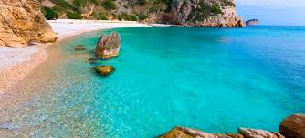

This is Amalfikusten
This is a stretch of coastline on the northern coast of the Salerno Gulf on the Tyrrhenian Sea, located in the Province of Salerno of southern Italy
This is The beach is located about three kilometers from the center of Ayia Napa in the eastern part of the island. The name comes from the Greek nissi which means "small island", after the small island that is just off the beach. Closer to Ayia Napa are the beaches of Sandy Bay and Grecian Bay. 2 lines about it
This is Skåne magazine has named the beach in Sandhammaren the World's
largest sandbox. Sandhammaren is a place for play, outdoor life and
enjoyment, which we are happy to share 2 lines about it